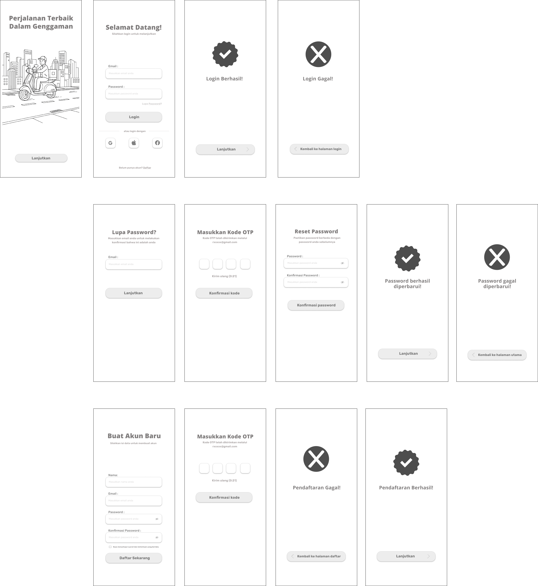
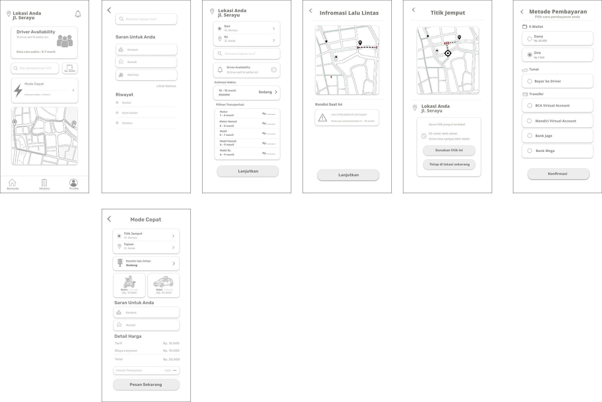
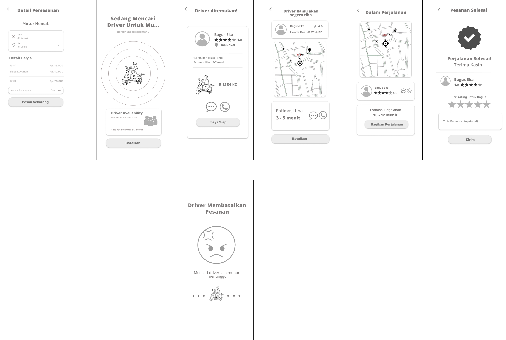
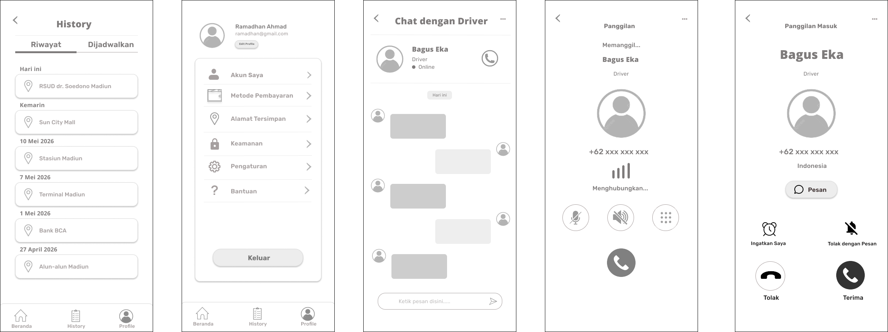

Hasil Sesi Eksplorasi Sketsa
Berikut adalah kompilasi coretan alternatif layout yang diajukan oleh masing-hari anggota tim sebelum dikerucutkan.

Opsi Eksplorasi A
Berfokus pada penyederhanaan alur otentikasi login/register, penyediaan peta indikator yang ringkas, serta kemudahan melacak histori perjalanan di bagian profil.

Opsi Eksplorasi B
Menonjolkan fitur *Pickup Suggestion* titik penjemputan alternatif yang dinamis dan visualisasi peta kemacetan lalu lintas real-time yang informatif bagi lansia.

Opsi Eksplorasi C
Konsep layout beranda minimalis dengan menu pencarian instan sekali ketuk (*1-Tap Booking*) serta antarmuka ulasan performa driver pasca-berkendara.

Opsi Eksplorasi D
Eksperimen tata letak kompleks dengan indikator densitas ketersediaan jumlah driver aktif berbasis grafik batang langsung pada halaman pemilihan layanan.

Opsi Eksplorasi E
Struktur *wireframe* awal berbasis grid persegi untuk pemetaan titik temu alternatif dan penyusunan informasi ringkasan invoice pembayaran tarif komuter.
Hasil Voting & Transformasi Wireframe
Berdasarkan perolehan suara terbanyak, berikut adalah hasil pengerjaan tim desainer yang telah sukses mentransformasikan sketsa konseptual menjadi struktur tata letak digital (Wireframe Lo-Fi).

Splash, Login & OTP
Perancangan struktur awal halaman masuk, validasi nomor telepon (OTP), serta penataan gerbang verifikasi pengguna yang aman.

Beranda & Peta Navigasi
Struktur tata letak beranda utama dengan penempatan kolom pencarian rute cepat, peta interaktif, serta info ketersediaan driver komuter.

Penetapan Tarif & Invoice
Penyusunan komponen lembar detail pembayaran, rincian biaya komuter, serta tombol aksi persetujuan pemesanan armada.

Riwayat & Rating Driver
Pengembangan komponen umpan balik pasca perjalanan, kolom ulasan bintang driver, serta kartu log riwayat transaksi pengguna.